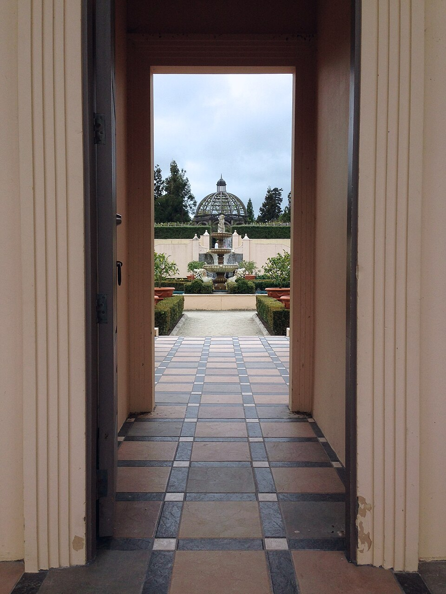

헉슬리 〈지각의 문〉 1954
1954년 작가 올더스 헉슬리는 메스칼린을 복용한 체험을 〈지각의 문(The Doors of Perception)〉으로 발표했습니다. 그의 묘사는 명료했습니다 — "이름·쓸모·분류가 사라지고, 꽃 한 송이가 그 자체로 우주로 보였습니다."
최근 Imperial College London(2016) 연구는 LSD가 좌뇌의 언어·자아 회로를 일시적으로 약화시킵니다는 것을 fMRI로 보였습니다. 결과 — 우뇌의 전역 연결이 평소보다 훨씬 강해집니다. 합일감·경외·예술적 통찰이 폭발하는 이유입니다.